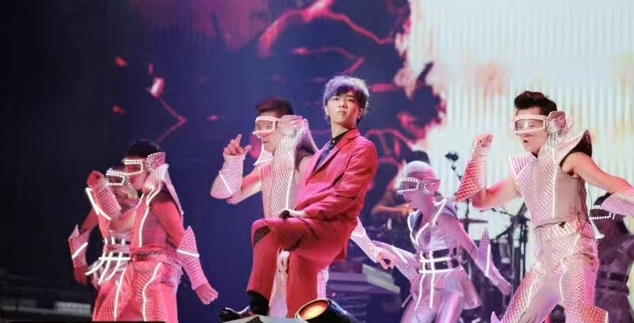
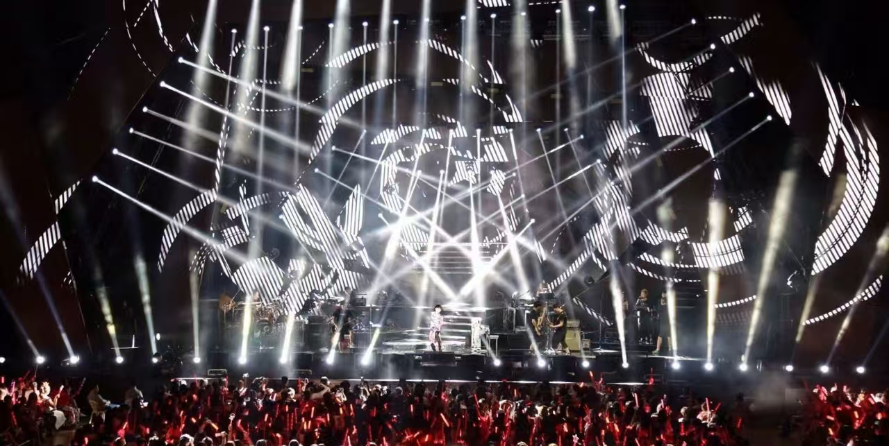
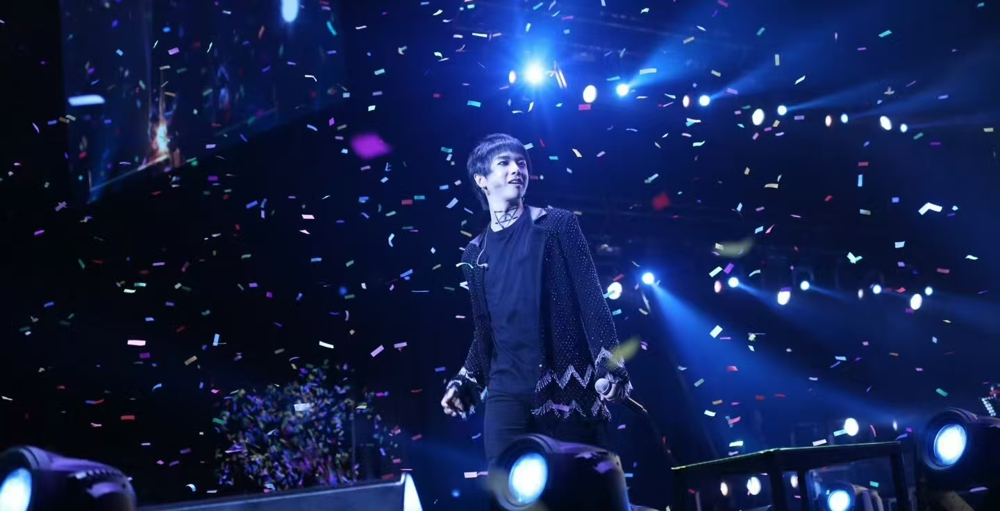
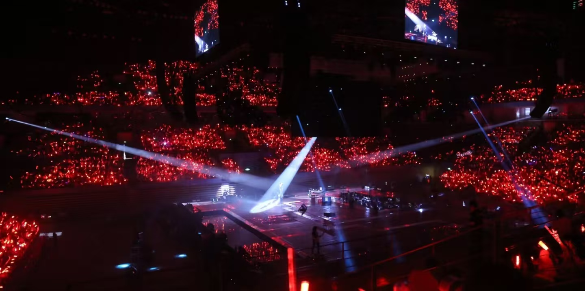
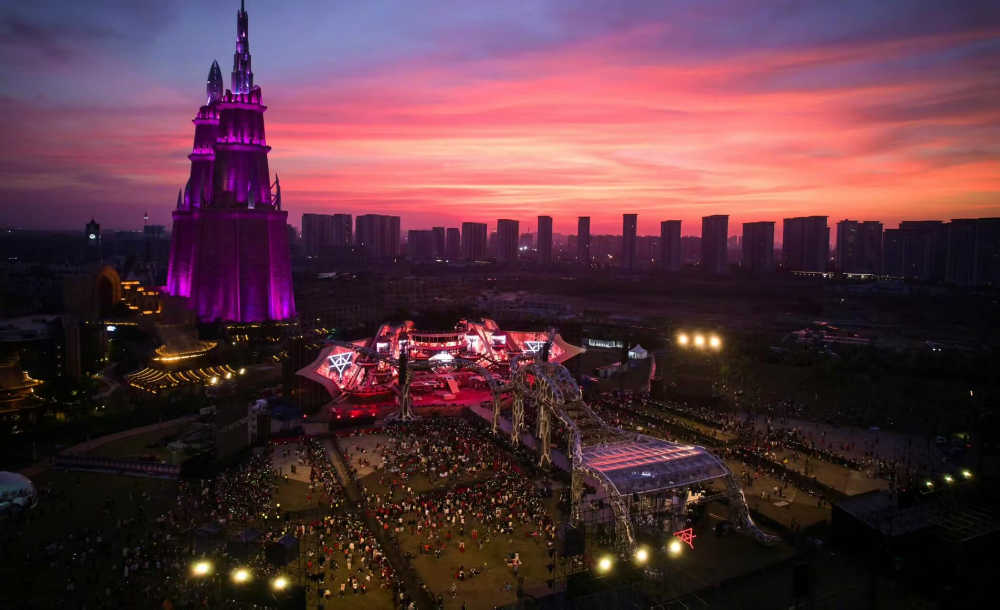
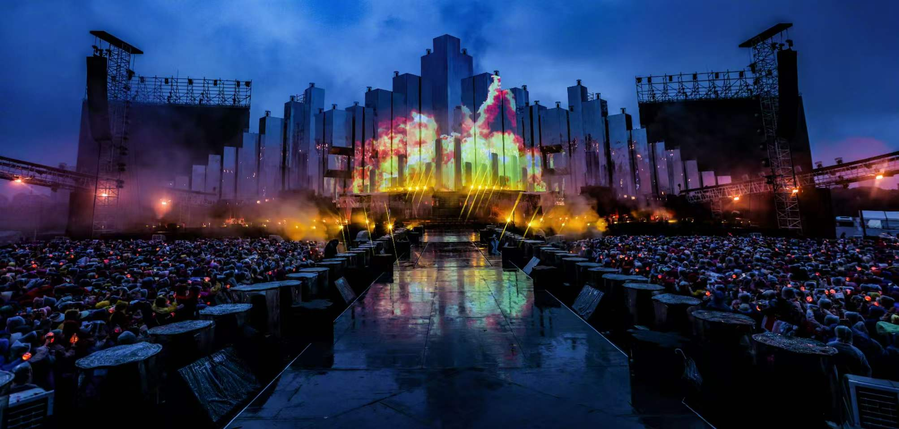
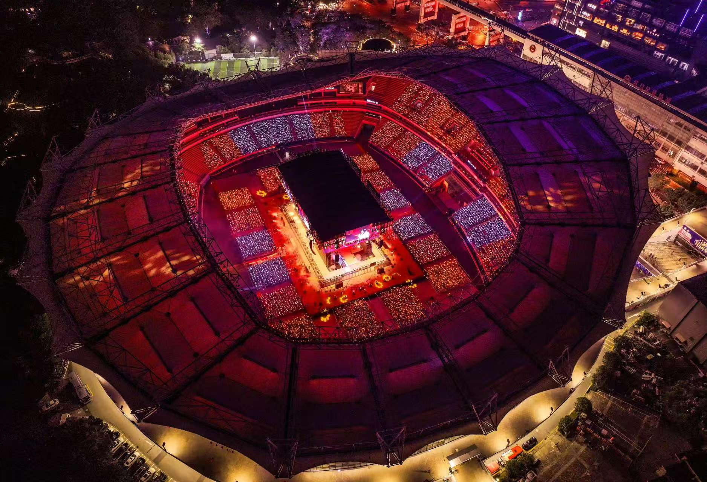

2014.09.06-09.07
北京万事达中心（现五棵松体育馆）
· 内地演唱会连开第一人
本次演唱会万人场2日连开，成为内地歌手首次演唱会连开，首次采用“场馆演唱，线上直播”的全新模式。
现场与线上直播结合的模式不仅让在现场的观众可以体验演唱会，更能让身处在其他城市的歌迷们也可以共同分享演唱会的精彩盛况。能容纳万人的五棵松万事达中心几乎满场，座无虚席。

2015.07.31-08.01
上海大舞台（万体馆）
· 内地演唱会三连开第一人
· 助阵嘉宾郎朗
· 助阵嘉宾郎朗
2015华晨宇上海“火星”演唱会创多个技术“第一”，拿舞台美术设计来说，演唱会力邀到顶级舞台设计周炳坤老师，很多华语天王天后级御用演唱会导演T.Y老师。
演唱会采用国内迄今为止投入体量最大的3D效果射灯和激光，灯光为上海大舞台特意进行多次改造，在场地区和观众区上方都安装了大面积的彩灯及激光源，整体舞美通过激光的辐射和大音效的叠加，制造出烟雨、电光、云雾的交错。

2016.07.02
北京乐视体育生态中心（原五棵松体育馆）
· 内地首次体育馆四面台个人演唱会
本次演唱会为了突出“puzzle迷”主题，首次采用了具有迷宫概念的四面台，利用数控卷轴的多层纱幕投影，使舞台虚拟更逼真、空间更具层次、演出更具视觉张力。
2016.08.21
上海梅奔体育馆
· 助阵嘉宾刘涛
演唱会舞台将采用透明LED舞台、透明亚力克升降“迷墙”，建造真实的舞台迷宫场景。数控升降灯架和矩阵灯营造出舞台梦幻般的光影效果，这也是国内第一次在个人演唱会上配置如此高科技的舞台设备。
2016年华晨宇火星演唱会上海站+深圳站直播付费观看人数超过13万次；双场演唱会#花花火星直播#总观看人数突破430万；#华晨宇火星季#话题阅读突破29亿次。

2016.09.16
深圳春蚕体育馆
· 助阵嘉宾方大同
“火星”深圳收官之战，重新回归四面台的舞台效果，更好地体现了此次演唱会“puzzle迷”的概念。LED升降台，亚克力迷宫造型舞台、数控矩阵灯架，更加让观众感受到华晨宇舞台的魅力，为整场演唱会增添了许多亮点。

2017.10.13-10.14
北京五棵松体育馆
· 内地首次体育馆四面台连开
本场演唱会

2018.09.08
北京鸟巢国家体育场
· 内地首次鸟巢连开
· 90后鸟巢第一人
· 国内演唱会单场观众人数最多记录
· 90后鸟巢第一人
· 国内演唱会单场观众人数最多记录
此次华晨宇鸟巢演唱会由台湾著名导演Evan WU操刀，台湾第一制作人陈镇川监制；香港最著名舞美设计师周炳坤打造顶级舞台，灯光师司徒小波呈现炫亮耀眼光效。
2008年北京奥运会开幕式国宝级音响师金少刚坐镇掌控极致声音，内地资深音乐制作人龙隆老师携五年火星演唱会御用乐手团队保驾护航，视觉和音乐品质都以亚洲顶级水平呈现。

2019.11.15-11.17
海口五源河体育场
· 内地首次体育场四面台个人演唱会
· 内地首次体育场四面台二连开
· 内地首次体育场四面台三连开
· 内地首次体育场四面台二连开
· 内地首次体育场四面台三连开
本场演唱会首次采用点控荧光棒技术，舞台中央同时设计了一颗“火星”，这颗机械球直径4米，全Led包裹，为了与真实的星球更加贴近，突出空灵的流光效果感，整个球体都是镂空设计，共定制弧形模组432块。而球体中心悬挂一个圆形威亚吊台，就是它，载着华晨宇降落于地面。
随着华晨宇那标志性的利落嗓音开始浅唱《烟火里的尘埃》，“星球”上方的数控十字灯架和数控十字透明屏也隆重登场。该灯架和Led屏幕由42颗kinesys数控葫芦系统打造，可随着花花移动和升降。在制造了绚丽梦幻场景的空中数控十字灯架上方，是由12块大小相同的Led模组组成的数控十字透明屏，它会跟着十字数控灯架上下移动。
2021.11.26-11.28
2021.12.03-12.05
海口长影环球奇幻乐园
· 美国缪斯设计奖铂金奖
· 美国好设计奖金奖
· 国内演唱会六连开第一人
· 首位国内平地造舞台开个唱的歌手
· 美国好设计奖金奖
· 国内演唱会六连开第一人
· 首位国内平地造舞台开个唱的歌手
“荒芜之上 • 春暖花开”，以「无上」为名，取“无出其上”之意
本场演唱会由华晨宇担任演唱会总导演，创建了全国首场乐园模式户外演唱会。该演唱会由华晨宇团队与奥运双舞美团队合作打造，采用白天和夜晚一天两场演唱会的演出模式。
舞台整体结构分为三个主要部分：主舞台、家舞台以及连接这两个区域的桥。
主舞台：宽度达到65米，高度约为20米。这一部分采用了大量的置景和复杂的结构设计，以一棵巨大的椰树作为核心元素，象征着火星家园。
家舞台：与主舞台形成鲜明对比，家舞台的设计更加注重温馨和亲密的氛围。它的陈设和色调均还原了花花的家，非常适合进行不插电演出，让观众仿佛置身于家中与艺术家一同享受音乐的乐趣。
连接之桥：这座桥不仅是一个物理上的连接点，还是一件艺术品。它的设计灵感来源于藤蔓，给人一种从主舞台自然延伸到家舞台的感觉，营造出一种仪式感和归属感。
这三大部分通过精心设计的结构和置景巧妙结合在一起，整体构成了一座巨大的、充满生命力的、通往希望的火星乐园。
主舞台：宽度达到65米，高度约为20米。这一部分采用了大量的置景和复杂的结构设计，以一棵巨大的椰树作为核心元素，象征着火星家园。
家舞台：与主舞台形成鲜明对比，家舞台的设计更加注重温馨和亲密的氛围。它的陈设和色调均还原了花花的家，非常适合进行不插电演出，让观众仿佛置身于家中与艺术家一同享受音乐的乐趣。
连接之桥：这座桥不仅是一个物理上的连接点，还是一件艺术品。它的设计灵感来源于藤蔓，给人一种从主舞台自然延伸到家舞台的感觉，营造出一种仪式感和归属感。
这三大部分通过精心设计的结构和置景巧妙结合在一起，整体构成了一座巨大的、充满生命力的、通往希望的火星乐园。

2023.04.07-04.09
杭州白马湖公园
· 户外乐园模式演唱会巡演第一人
· 户外乐园模式演唱会连开第一人
· 户外乐园模式演唱会连开第一人
“2023华晨宇火星演唱会”将延续2021“火星乌托邦”形式，设有下午场与晚上场，一张门票体验白天夜晚两种不同感觉的演出，再度将“欢迎回家”的约定落地，歌迷们可以尽情感受音乐、美食、美景与独特的火星文化，沉浸式享受一场好听、好玩、好看的火星饕餮盛宴。
2023.04.30-05.02
成都露天音乐公园
升级版乐园主舞台日间的视觉主体是一座高28m的科幻城市，镜面反光材质的大胆应用不断挑战着所谓的常规“视觉设计标准”，这代表了一种强大到面对一切的从容。镜面反光材质使舞台充分和自然环境融为一体，在不同的观看角度、不同的时间呈现出不同的神奇效果，有时候甚至会有“海市蜃楼”的感觉，感觉舞美“消失不见了”。
2023.05.27-05.28
武汉园博园
集团副总裁、锋尚互娱总负责人李斌作为此次巡演（2023年）舞美总设计，再度自我突破，以堪称完美的视觉设计输出，巧妙适配演唱会日间和夜间两种模式，打造满足“不插电舞台”和“狂欢派对”不同光影需求的梦幻舞台，留下专属华晨宇火星演唱会的绝美舞台体验。
主舞台拥有10组可以移动的巨型装置，通过舞台上的“十字交叉轨道”进行不同方向的移动，将舞台组织成不同的空间，再加上影像和灯光在镜面组成不同的空间中随机折射，会让人在不同的位置看到不同的效果，呈现出“横看成岭侧成峰”的状态，营造出千变万化的效果。

2023.06.22-06.24
长沙马栏山鸭嘴公园
华晨宇和火星演唱会团队与场地协商，争取为前来观看演出的歌迷提供免费的行李寄存、停车等服务。
场地内设有免费医疗点，一些观众分享了遇到工作人员免费发放藿香正气水的经历。演唱会还为观众准备雨衣和鞋套，若有需要便会为观众发放。武汉演唱会突遇气温回升，华晨宇和演唱会团队临时调用冰块和鼓风机为场地降温，同时在场地喷洒干冰。
火星演唱会的移动卫生间也是细节满满：屋内放有小镜子和洗手台，门前装上了发光条，如果女生临时遇到生理期还可以联系工作人员拿取免费的卫生用品。
场地内设有免费医疗点，一些观众分享了遇到工作人员免费发放藿香正气水的经历。演唱会还为观众准备雨衣和鞋套，若有需要便会为观众发放。武汉演唱会突遇气温回升，华晨宇和演唱会团队临时调用冰块和鼓风机为场地降温，同时在场地喷洒干冰。
火星演唱会的移动卫生间也是细节满满：屋内放有小镜子和洗手台，门前装上了发光条，如果女生临时遇到生理期还可以联系工作人员拿取免费的卫生用品。

2023.09.09-09.10
北京鸟巢国家体育场
· 二登鸟巢
· 鸟巢演唱会四面台第一人
· 鸟巢演唱会四面台二连开第一人
· 全国单场演唱会最高人数记录
· 鸟巢演唱会四面台第一人
· 鸟巢演唱会四面台二连开第一人
· 全国单场演唱会最高人数记录
2023华晨宇鸟巢演唱会使用灯具的品牌为ACME，数量超2200台，其中包括了多种颜色、亮度和照射角度的灯光设施。
舞台区域，通过灯光的颜色和亮度调整，可以增强歌曲的感染力，面光灯AECO 20、三合一摇头灯XP 550 BSW、花样战神XP 500 BEAM、条形频闪灯STROBE 3 IP、光束频闪二合一STROBE 5 IP、LED摇头染色灯CM 800Z、钨丝氛围主力MB 1000、两面效果灯CM 560Z、条形效果灯TB 1060使观众更加沉浸在演唱会的氛围中。同时，根据歌曲的节奏和情感变化，还灵活地调整了灯光的照射角度和闪烁频率。
外场位置使用了面光灯AECO 20、花样战神XP 500 BEAM灯具，围绕外场三圈，为现场观众带来了更加精彩的视觉效果。同时，也为演唱会的安全和秩序提供了更好的保障。
外场位置使用了面光灯AECO 20、花样战神XP 500 BEAM灯具，围绕外场三圈，为现场观众带来了更加精彩的视觉效果。同时，也为演唱会的安全和秩序提供了更好的保障。

2023.09.27-09.29
上海虹口足球场
· 上海体育场四面台第一人
孵化自“鸟巢”的希冀，向南而飞。

2023.10.21
南京奥体中心体育场
· 南京体育场四面台第一人

2023.12.02-12.03
广州大学城体育场